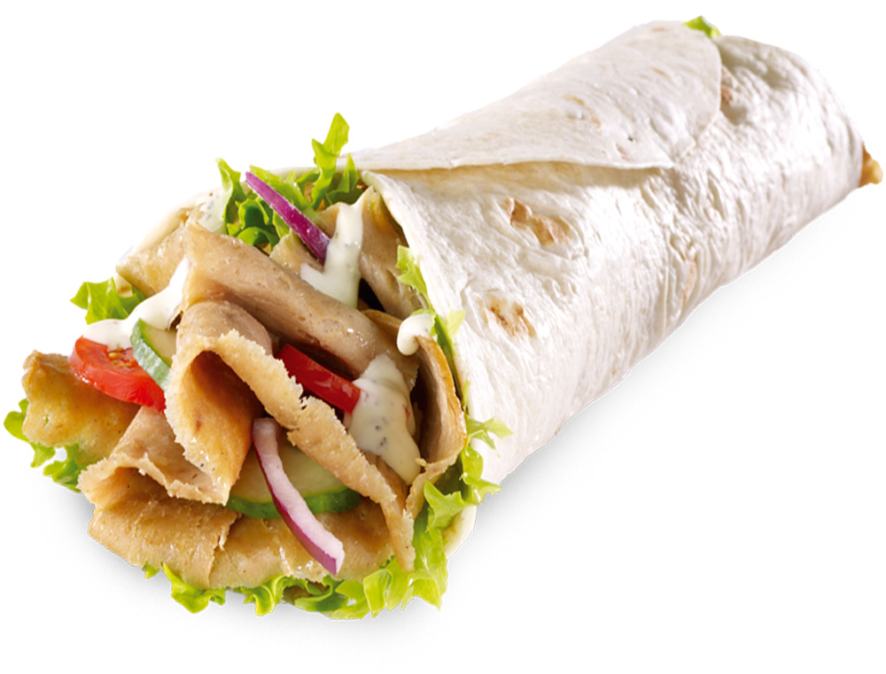
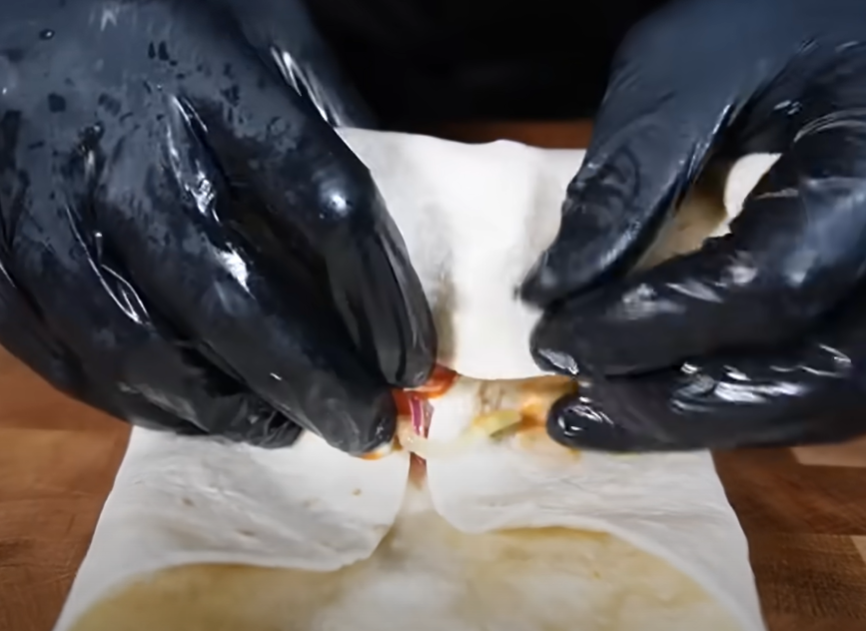

Kebab casero¶

Datos básicos¶
- Comensales: 4
- Tiempo total de preparación: 3-4 horas
Ingredientes¶
Verduras:
- 1 - 2 tomates
- 2 cebollas blancas
- 1-2 cebollas rojas
- 1 zanahoria (opcional)
- 1 ajo entero
- 1 lechuga Iceberg
- Cebollino
- 1 Limón
Carne:
- 1 kg de contramuslos de pollo deshuesados y sin piel
Salsas, especias y condimentos:
- 1 bote grande de yogur griego
- Tomate frito
- Ketchup
- Mayonesa
- Agua con gas
- Vinagre de manzana
- Vinagre de Módena
- Aceite de oliva
- Sal
- Pimienta
- Jengibre en polvo
- Curry en polvo
- Canela
- Cúrcuma
- Orégano
- Cilantro (mejor fresco)
- Salsa de soja
Preparación¶
Maceración de la carne¶
- Añadimos a un bol:
- 3 cucharadas grandes de yogur griego
- Zumo de medio limón
- 1 cucharada de aceite de oliva
- Un poco de sal, pimienta, jengibre en polvo, curry, canela, cúrcuma
- 2 dientes de ajo rallados
- Cubrimos los contramuslos con film transparente y los aplastamos con algo (por ejemplo, un rodillo)
- Partimos por la mitad los contramuslos y los metemos en el marinado, tapamos con film y lo guardamos durante al menos 3 horas en la nevera.
Salsa blanca¶
Mezclar:
- 2 partes de yogur griego
- 1 parte de mayonesa
- Un poco de orégano
- Cilantro (mejor fresco picado)
- 2 dientes de ajo rallados
- 1 poco de salsa de soja
Salsa roja¶
Mezclar:
- 2 partes de tomate frito
- 1 parte de ketchup
- Sal, pimienta y azúcar
- Cebollino picado
Horneado de la carne¶
- Partimos las dos cebollas blancas sin quitar los pedúnculos
- Ensartamos dos brochetas (metálicas) cada una en media cebolla
- Vamos colocando los contramuslos marinados sobre las dos brochetas
- Tapamos encima con otra media cebolla que una las dos brochetas
- Metemos al horno a 190º durante 30-40 minutos
Marinado de la cebolla¶
- Cortamos en juliana fina la cebolla roja
- Añadimos a un bol:
- Vinagre de manzana
- Aceite de oliva
- Un poco de vinagre de Módena
- Agua con gas
- 2 cucharaditas de sal
- 2 cucharaditas de azúcar
- Metemos la cebolla bien sumergida, y reservamos mientras se haga el pollo
Preparación de los rollos¶
- Cortamos fino y picamos el pollo
- En cada torta añadimos:
- Lechuga
- Tomate en rodajas
- Cebolla roja
- Un poco de zanahoria rallada (opcional)
- Salsas roja y blanca
- Enrollamos

- Cubrimos con papel de aluminio y tostamos en sartén sin aceite